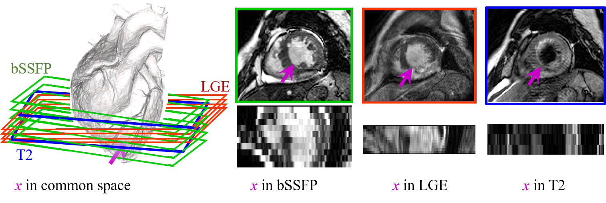
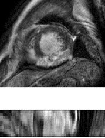
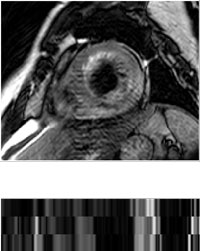

The CMR data from 45 patients, who underwent cardiomyopathy, had been collected from Shanghai Renji hospital with institutional ethics approval and had been anonymized. Each patient had been scanned using the three CMR sequences, i.e. the LGE, T2 and bSSFP. The three CMR sequences were all breath-hold, multi-slice, acquired in the ventricular short-axis views.
Training data
35 T2-weight CMR (image + manual label)
35 bSSFP CMR (image + manual label)
5 LGE CMR (image + manual label)
35 bSSFP CMR (image + manual label)
5 LGE CMR (image + manual label)
10 T2-weight CMR (only image)
10 bSSFP CMR (only image)
10 bSSFP CMR (only image)
Test data
40 LGE CMR (only image)

bSSFP CMR
The bSSFP CMR was a balanced steady-state, free precession cine sequence. Since both the LGE and T2CMR were scanned at the end-diastolic phase, the same cardiac phase of the bSSFP cine data was selected
for this study. The bSSFP images generally consist of 8 to 12 contiguous slices, covering the full
ventricles from the apex to the basal plane of the mitral valve, with some cases having several slices
beyond the ventricles. The typical parameters are as follows, TR/TE: 2.7/1.4 ms; slice thickness: 8-13
mm; inplane resolution: reconstructed into 1.25×1.25 mm.

LGE CMR
The LGE CMR was a T1-weighted, inversion-recovery, gradient-echo sequence, consisting of 10 to 18slices, covering the main body of the ventricles. The typical parameters are as follows, TR/TE: 3.6/1.8
ms; slice thickness: 5 mm; in-plane resolution: reconstructed into 0.75×0.75 mm.

T2 CMR
The T2 CMR was a T2-weighted, black blood Spectral Presaturation Attenuated Inversion-Recovery (SPAIR)sequence, generally consisting of a small number of slices. For example, among the 35 cases, 13 have
only three slices, and the others have five (13 subjects), six (8 subjects) or seven (one subject)
slices. The typical parameters are as follows, TR/TE: 2000/90 ms; slice thickness: 12-20 mm; in-plane
resolution: reconstructed into 1.35×1.35 mm